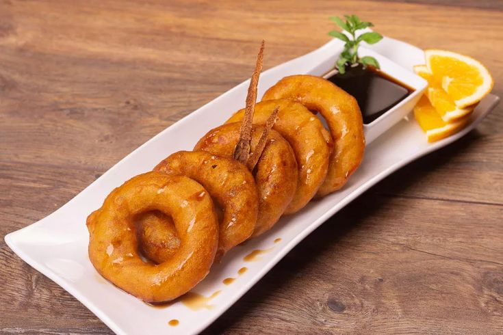

Lima, Le Carrefour Culinaire!
Histoire
Il était une fois, au bord du Pacifique, une ville dynamique et cosmopolite appelée Lima. Son histoire remonte à près de cinq siècles, lorsque les conquistadors espagnols, menés par Francisco Pizarro, ont fondé la ville en 1535. Ils l'ont nommée "La Ciudad de los Reyes", la Ville des Rois, en l'honneur des Rois Mages.
Au fil des siècles, Lima est devenue un melting-pot culturel, où les traditions indigènes, espagnoles, africaines et asiatiques se sont entremêlées pour créer une identité unique. La ville a prospéré en tant que centre commercial important, reliant l'empire espagnol aux autres parties du monde.
Aujourd'hui, Lima est une métropole dynamique en pleine expansion, avec une population diversifiée et une scène culturelle animée. Ses quartiers historiques, tels que le centre-ville et le quartier de Barranco, regorgent de musées, de galeries d'art, de restaurants de classe mondiale et de boutiques branchées, offrant aux visiteurs un aperçu captivant de son passé riche et de son avenir prometteur.

Picarones
Pour le dessert, essayez les picarones, des beignets péruviens à base de pâte de courge et de patate douce, frits et servis avec un sirop sucré à base de chancaca (mélasse de canne à sucre), de cannelle et d'anis. C'est une douceur délicieuse et réconfortante, parfaite pour terminer un repas péruvien.